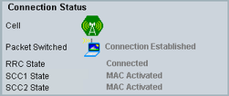

Connection Status
The connection status area displays the following information.

Connection status area of the main view
For background information about the displayed states, see "Connection States".
For control of the states, see "Signaling Control".
Displays the current state (or state transition) of the downlink signal generator.
Remote command:Displays the current state or state transition of the packet-switched network domain.
Remote command:Indicates whether a PCC RRC connection is established ("Connected") or not ("Idle").
Remote command:Displays the current state of the secondary component carrier (SCC) number <n>. Only visible for carrier aggregation scenarios.
Remote command: